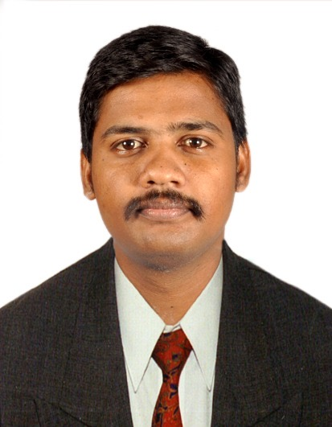

HCI Researcher · UX Design Technical Lead · 15+ Years
I study how cognitive science can make high-stakes enterprise interfaces less dangerous to use. My research formalises practitioner knowledge into testable frameworks — the AI-AVS framework for enterprise knowledge discovery, the Dignity-First model for financial UX under cognitive load, and the Stress-First Design model for emergency-response HCI — grounded in Cognitive Load Theory, dual-process theory, and 15 years of deployment-scale evidence from Lam Research, Microsoft, PenFed, and Cadent Gas.

KBDesign Contributions
Design Contributions
Design Contributions
Design Contributions